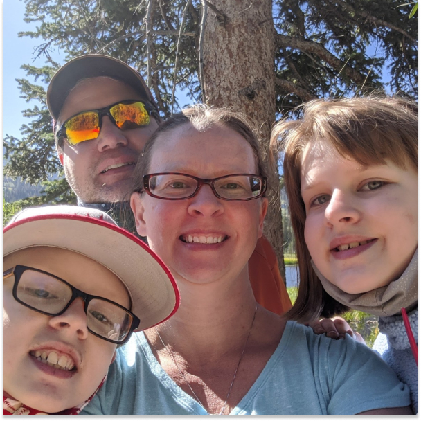
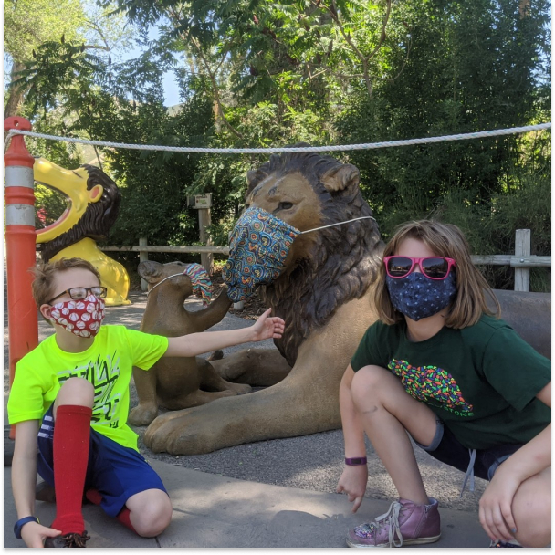
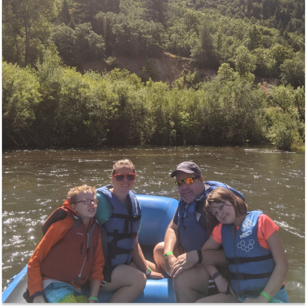
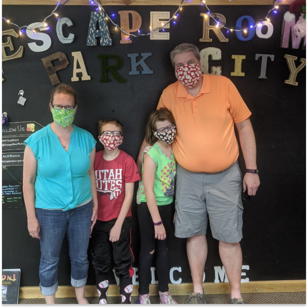
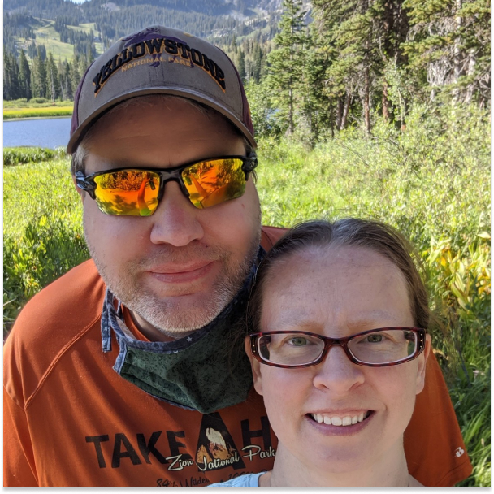

Staycation 2020
In August 2020, as the Coronavirus pandemic dragged on, we took some much needed time to relax and recharge. We chose to spend a few days up in the mountains at a local ski resort. This allowed us a chance to get away, swim at the pool, and spend time together.
We had hoped there would be options for outdoor dining or takeout. Other than a local food truck, everything else was on the other side of the mountain in Park City. So we made that drive a few times (and saw a porcupine in the middle of the road one night.)
After spending a few days in the mountains, we came home. We took a guided river rafting trip through the Provo Canyon, went back up to Park City to try out an escape room (we escaped!), and went to the zoo where we got to see the as-yet-unnamed baby gorilla.
In addition to outings, we spent extra time together at home. We did a few puzzles, played a few games, and celebrated Alex's birthday.
We continued to pickup dinner every night. Dan and I even went out to celebrate our anniversary with dinner at the Porcupine Pub.
